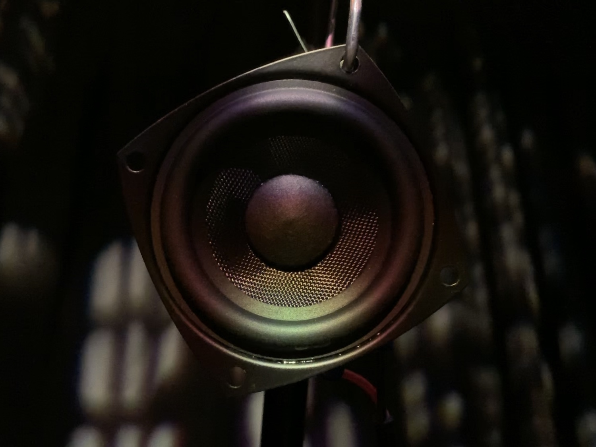
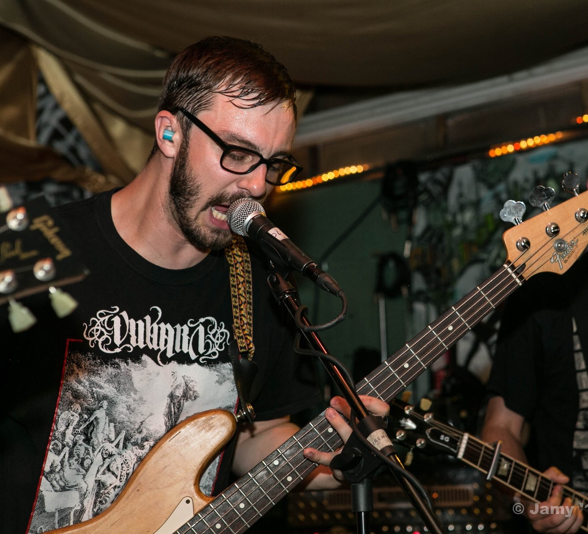
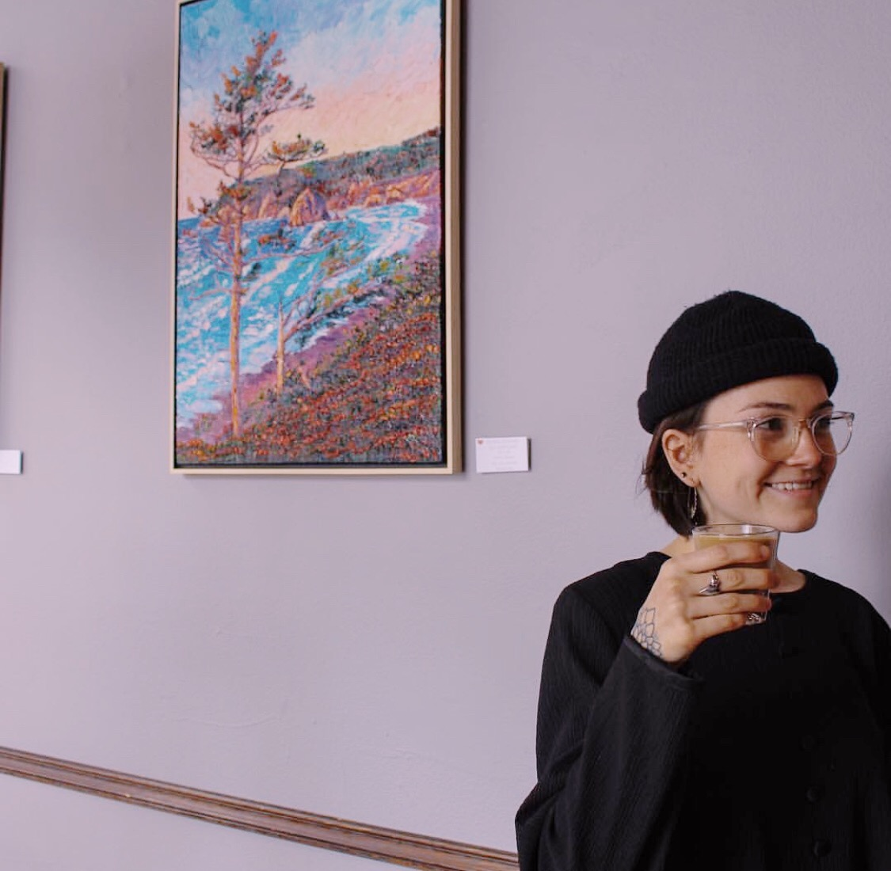

45°N
Circadian Rhythms
The Experience
The PSU Sonic Arts and Music Production program explores the natural cycle of circadian rhythms within the urban bustle of Portland with their visual and audio art installation, 45°N: Circadian Rhythms. Each student used a combination of field recording, synthesis, and other forms of audio editing to represent the soundscape fo the location in an emotional and literal sense. To give the listener a more immersive experience, they developed a visual representation of their location with lighting evocative of the time of their recording.
Sound Art is an exploration of the aesthetic, emotional, and physical qualities of sound. Unburdened by the various theoretical frameworks which surround traditional music, the sound artist is free to utilize and unlimited palette of sounds. Sound artists critically examine human perception and our relationships with nature, time, space, our bodies, and each other thorough the ephemeral medium of sound.
Melody, harmony, and rhythm comprise the primary elements of music. We are conditioned by our musical culture to understand sound in these terms, limiting our possibilities of expression. Sound art, on the other hand, eschews these elements to avoid our culturally-defined expectations around music.
The foundation s of sound art were set in the early Twentieth century by composers and musicians who set out to redefine our relationship with sound. Luigi Russolo's The Art of noises serves as an earl y manifest: in our post-industrial society where we are constantly surrounded by noise, artists must free themselves to explore in itself with new instruments and techniques. Sound art emerged alongside the invention of computers, synthesizers, and acoustics while drawing influence from a diverse set of academic disciplines.
45°N
Artist Statements
Keanu Yokoyama
Time: 1800
Location: 45°31’52.10”N 122°40’55.78”W (Tanner Springs)
Keanu Yokoyama is an audio engineer, producer, sound designer, and musician. He originates from the northern coast of Oregon. Fusing creative coding, with studio recording is Keanu’s specialty. Keanu does this by creating his own electronic instruments and programs, and using them in the recording studio. Keanu’s work can also be found under the moniker Kokonama.
This piece is a sonic interpretation of the Tanner Springs park in NW Portland. Keanu uses sine tones, and pink noise to recall the serenity that is Tanner Springs, within the chaos of downtown Portland.
Charles Rose
Location: 45°32'0.87"N 122°42'8.91"W (Wallace Park, NW 25th and Raleigh)
Charles Rose is a composer, writer and sound engineer in his senior year at Portland State. He recorded at Wallace Park, NW 25th and Raleigh at noon in early spring. Fifty-four degrees, overcast. A light dew on the grass from the morning rain. The filtered bands of pink noise and non-coinciding rhythms derived from fibonacci numbers create a sense of stillness and peace amidst the chaos of the city and a yearning for the simplicity and innocence of childhood.
Breanna Tarver
Time: 1600
Location: 45°35'19.89"N 122°42'54.15"W (The New Columbia)
Breanna Tarver collaborates in 45⁰N: Circadian Rhythms, the intriguing sound art SAMP installation. Her background in music stems from poetry, and creative writing; she brings an inquisitive approach to the sound arts. The location and time that Breanna chose to demonstrate is The New Columbia at 4:00 pm. This community is a strong and important focus for Breanna because she identifies specifically with its historical trials and tribulations from gentrification. Currently, Breanna works as a mentor for many of the youth whom occupy the residence. Showcasing this neighborhood would be, to Breanna, giving a voice to those whom need it.
Christian Murphy
Location: 45°30'48.29"N 122°40'17.94 (Tom McCall Waterfront Park)
Christian Murphy is an audio engineer and multi-instrumentalist musician who is fueled by blending the natural with the unnatural in the recording and production of musical works. Coming from the background of a musician and songwriter, the world of sound art has been a new frontier for creative expression.
At 7:00am by the river of Tom McCall Waterfront Park the city is already stirring, and the industrial cacophony of cars and construction surround the quiet river bank. Using both performances of prepared objects and manipulated source recordings, Christian seeks to create a true representation of this location which highlights the duality between this peaceful patch of green and the incessant, unforgiving city noise.
Corrin Coffey
Time: 1900
Location: 45°30’15.01"N 122°40’13.60"W (Tilikum Crossing Bridge)
Corrin Coffey brings her creativity to the art of soundscapes in the SAMP Spring 2019 installation 45° N: Circadian Rhythms. A classically trained singer/composer, Corrin has found the genre of sound art to be an intriguing challenge and exciting take on what it means to express with sound. The location/time she has chosen is the Tilikum Crossing Bridge at 7PM. Corrin’s piece outlines the peaceful drone of traffic and wind accompanied by the scheduled beats of Trimet transit. The most important aspect was to express the steady swells without losing the unsuspected additions of people’s lives walking by
David Moncrieffe

Location: 45°31'54.58"N 122°40'58.72"W (Pearl District Courtyard)
David Moncrieffe (pronouns: they/them/theirs) is a music producer and sonic artist living in downtown Portland, Oregon whose work explores the hidden emotional landscape of the physical world through the use of field recording, tape loops, and hardware synthesizers. David’s contribution to this installation aims to encapsulate the quiet and personal beauty of nocturnal urban solitude: a midnight spent in the Pearl District, sitting in a hemmed-in courtyard absorbing the sonic stories unfolding in the night air around oneself.
Jacob Cline
Time: 2000
Location: 45°N31'38.14"N 122°41'39.48"W (A bar in NW Portland)
Jacob Cline is a multi-instrumentalist producer. He makes electronic music under the name Light Pyramid. This piece explores the relationship between public and private, and feelings of loneliness in crowded areas.
Javier Prado
Location: 45°30'54.38"N 122°35'45.55"W (Mount Tabor Park)
Junior, first wave SAMP student, and classically trained saxophonist. Takes inspiration from hip-hop and video game soundtracks.
This Mount Tabor Park soundscape is meant to convey the feelings behind each individual sound heard when sitting in the spot shown in the picture. The sounds aren’t meant to show the soundscape of Mount Tabor Park as a whole but rather depict the selective attention towards specific noises in the soundscape. The piece moves between these sounds based on how often they occur in the space or on how grabbing they are towards your attention.
Jimin Jun (Stella)
Time: 1700
Location: 45°31'16.72"N 122°42'5.08"W (Washington Park)
Jimin (Stella) Jun was born and raised in South Korea. She started studying abroad in Paraguay, South America for her secondary school education. Currently, she continues her journey in Portland State University in the Sonic Arts and Music Production program. Stella is well experienced and has a great passion for music and sound engineering. Her experiences and challenges in her life helped her to grow as a sound engineer. As she spent much time listening to music and sound, her ears are trained for the better quality of sounds. With her talents and knowledge that she gained from PSU sound art course, she has created this soundscape to be part of 45°N, which was recorded in Washington park at 5pm. It depicts the peaceful nature ambience with the combination of metal sounds in the playground.
Joey Mohler

Location: 45˚31’6.84”N 122˚41’9.52”W (Church)
Joey Mohler is a musician born and raised in Oregon. Joey discovered a passion for music at an early age, and later went on to become heavily influenced by the do-it-yourself ethos of both the hardcore punk and the lo-fi home recording movements of the last fifty years. He currently plays bass in a handful of bands around the state, as well as composes, produces, and performs ambient music and sound art as Slemenda. For this piece, he explores the process of searching for tranquility within isolation, all while surrounded by a city that is never fully at rest.
Julianne Pittenger
Time: 0900
Location: 45°30'34.28"N 122°45'36.65"W (Cornelle Farm Café)
When presented with the idea of creating her own unique soundscape, Julianne had the idea of choosing a location that is more tranquil than most other areas of the city. Every day we are surrounded by the sounds of cars, people, and industrial life; being that she grew up in a small, quiet hill town in Northern California, she wanted to capture that same simplicity she was once used to. Although there is almost never an absence of human presence anywhere near the city, she was able to find a moment in time where it was less apparent.
Nolan Ward
Location: 45°31'19.61"N 122°39'17.98"W (10th and Ankeny)
Nolan Ward is a multi-instrumentalist from Portland. Their pronouns are they/them/theirs. They have been playing music since age 8 and have been active in Portland’s DIY scene since age 14.
The intersection of 10th and Ankeny in inner southeast near Burnside was chosen because Old Town Music, a local instrument store, is located here. It’s a very pleasant neighborhood that is moderately trafficked. Unfortunately, the shop isn’t open at 10 AM, but there is much accurate auditory context for this neighborhood’s sound sources
Peyton Abrams
Time: 0100
Location: 45°35'46.03"N 122°41'8.42"W (Delta Park Max Station)
Peyton Abrams is a Guitarist, Audio Engineer, Producer, Sound Designer, DJ, and Sonic Artist originally from Houston, Texas. This artist chose Delta Park as his location, the primary travel center between Portland, Oregon and it’s neighbor Vancouver, Washington. The transitional energy inherent to the space was felt by the artist during his 1:00 AM visit, when practically nothing exists there to disturb that ambience but the recurring arrival of the MAX, the sounds of cars on the highway, or the buzz from a broken station lamp. In this work a combination of field recording, sound design, and synthesis is used to recreate the experience of that ambient energy and for it to be explored within the acoustic structure of this Installation.
Ryan DeHaven
Location: 45°32’3.31”N, 122°42’13.18”W (Suburban Backyard)
Ryan has been performing music since third grade and has learned to play a variety of instruments in this time. His music and audio work in musical theater is the closest he has come to delving into the realm of Sound Art, as this is a very new area of study for Ryan. He is excited to be part of 45ºN; Circadian Rhythm with this contribution to the project. This location, a suburban backyard at 9pm on a rainy night, is designed to evoke a feeling of comfort and familiarity mixed with the light movement of home life near Portland.
Sam Renner
Time: 1500
Location: 45°30'47.00"N 122°40'24.94"W (Tom McCall Waterfront Park)
Sam Renner is a junior transfer student in the SAMP program. They have experience mixing and mastering audio, producing and writing music, as well as other sound art projects. For this installment, their thirty minute piece was created with inspiration from sounds heard during an average afternoon by the river in downtown Portland. Field recordings were taken from the point of listening, as well as closer to different sound sources to achieve the most clear audio for an accurate representation of the sounds that existed in the space.
Sydney Christensen

Location: 45°31'23.41"N 122°41'29.28"W (West Burnside)
From a young age, Sydney has had a strong connection to the surreal wonders. The early hours of the morning stimulate this nuanced side of life. When most of the world is still asleep and the sky begins to wake up, a cerebral buzz evokes the senses. Capturing and expressing this particular yet inexplicable time allowed her to step into the surreal wonderland and she hopes to give even just a taste of the magic realm to listeners and viewers.
Tessa Chen (Ying-Yin)
Time: 1400
Location: 45°31'7.69"N 122°40'46.51"W (Jefferson St. Downtown)
Tessa has been passionate about music ever since her childhood. She has actively pursued her artistic interests in composition, performance and dance since she was a child. Her favorite musical styles are classical, jazz, and pop music reflecting on personalities and strengths. She hopes to record, produce and edit quality music for inspired projects and creative events. Being part of 45° N, Tessa has chosen the time 2PM on Jefferson St. downtown Portland. It’s been fun putting together the mix in soundscape because it allows us to create a virtual environment.